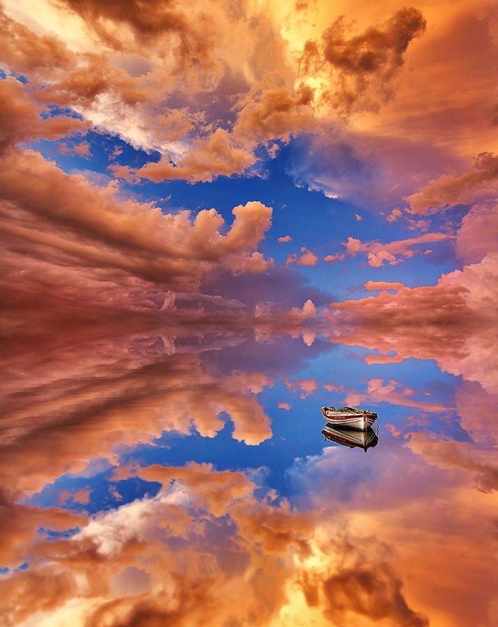
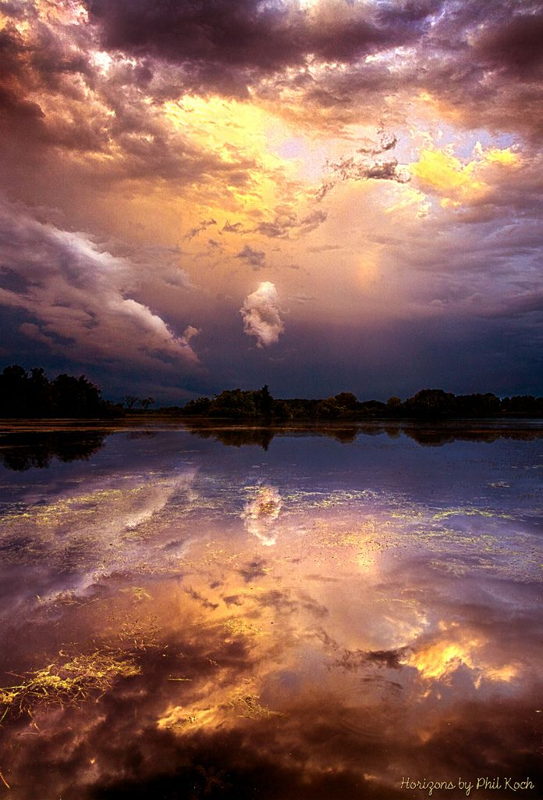

Bolivia's Salar de Uyuni is regarded as one of the most dramatic and stunning landscapes in South America, if not the entire world. It is the world's biggest salt flat, stretching over 4,050 square miles of the Altiplano, and was left behind by prehistoric lakes that drained long ago. A thick layer of salt spreads all the way towards the horizon here, covered by quilted, polygonal patterns of salt rising from the ground.
Throughout the year, all neighboring lakes flood, turning the flats into a stunning reflection of the sky. This incredible and exotic terrain is a valuable extraction site for salt and lithium, the element that powers computers, cellphones, and electric cars. The location is home to the world's first salt hotel, as well as road-tripping tourists and local laborers who collect these minerals. The stark grandeur & solitude of Salar de Uyuni may make for a magnificent experience or a logistical nightmare.
The Salar is part of the Bolivian Altiplano, and its history began only with the uplift of the Andes, resulting in the construction of that high plateau. The territory that is now the Salar de Uyuni was a large, deep lake named Lake Minchin between 30,000 and 42,000 years ago. As Lake Michin dried up, it left behind numerous smaller lakes, which dried up as well, establishing two important lakes and two salt deserts, the largest of which is the Salar de Uyuni. Poopo, one of the two lakes, continues to have a considerable impact on Salar de Uyuni. Titicaca, another large Altiplano lake, overflows as well as surrounds Lake Poopo during the rainy season. Whenever Poopo overflows, it floods the salt flats, creating beautiful wintertime scenes in which a thin layer of water generates magical reflections of the sky and anything or everyone on the flats.
The region is made up the largest global lithium resource, comprising over 70% of the world's lithium in the form of salt. A total approximately 25,000 tonnes of salt are extracted here each year, out of an estimated 10 billion tonnes.
Due to the inevitable sedimented salt, the region is rather flat, and it is commonly used for various technological purposes (testing of automobiles and the like). The basaltic rock Isla del Pescado is located in the center. It is a natural reservation with lovely panoramas. The surface elevation of said Salar de Uyuni fluctuates by less than one meter. The surrounding landscape, on the other hand, is fairly mountainous, including the volcanoes of the Andes highlands, which are part of the Pacific Ring of Fire.
This terrain was a massive prehistoric lake named Lago Michin around 40,000 years ago, which gradually dried out about 15,000 to 10,000 years ago; the dissolved minerals inside its waters created the enormous salt flat. The Uyuni salt plain's surface is made up of gypsum (calcium sulfate) and halite (sodium chloride). The Salar serves as a significant transportation route through the Bolivian Altiplano and is an important breeding area for various flamingo species. Salar de Uyuni is also a climatological transitional zone, since the towering tropical cumulus congestus and cumulonimbus incus clouds that form in the saline flat's eastern part during the summer are unable to penetrate beyond its drier western boundaries, near the Chilean border and the Atacama Desert.
@ 2022 Silawan, John Kenneth C. | Introduction to Computing Batch 2 | Website Project | Beautiful Wonders of The World | No Copyright Infringement Intended - All rights reserve to the Righful Owners